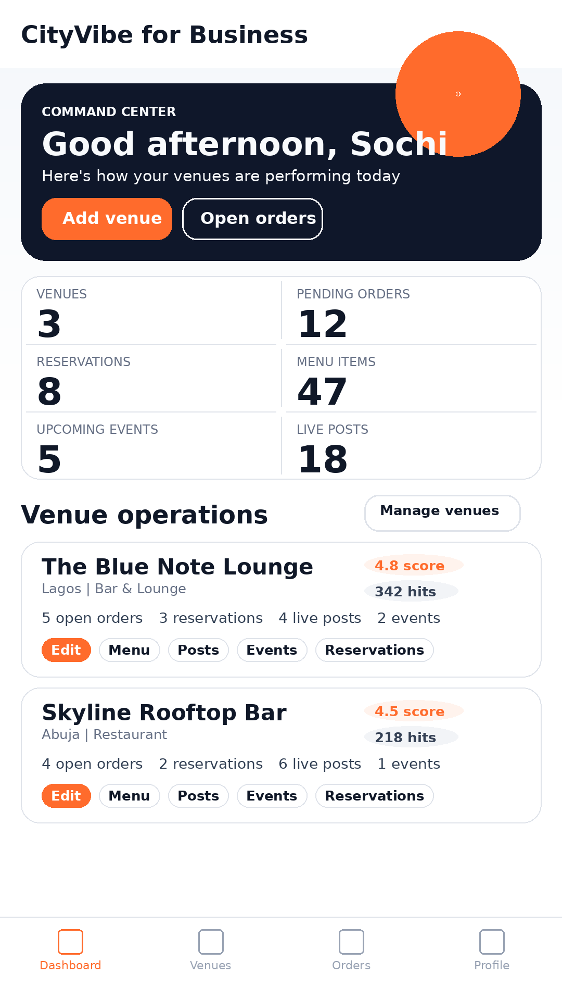
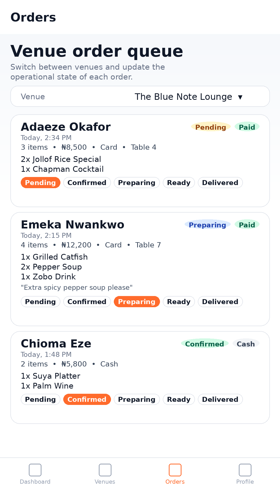

What it is
CityVibe is intended to connect people with things happening around them while giving venues and operators tools for menus, posts, reservations, orders, events, and performance.
Product record
A city discovery and local-commerce platform for venues, orders, reservations, loyalty, rides, stays, and business owner operations.
Product views
The product spans discovery and operations, so the proof sits in both the public surface and the business tools behind it.



CityVibe is intended to connect people with things happening around them while giving venues and operators tools for menus, posts, reservations, orders, events, and performance.
The app uses an Nx Angular workspace, Firebase hosting targets for website/app/admin, Firebase Auth, Firestore, Firebase Functions, shared interfaces, and separate frontends for public, customer, owner, and admin concerns.
The challenge is avoiding a product that feels like many unrelated apps stitched together. I separated consumer discovery, business operations, and admin control while keeping the core objects consistent: venues, orders, reservations, posts, and users.